主張（一文）
「AIがあればコードは書けなくてもいい」と思っている人に、自分の採用で見ているのは貼ったコードではなく、なぜそうしたかを自分の言葉で説明できるかどうかだ、と伝え、AIを使っても考えは自分で持とうという気持ちを残す。
| 役割 | この動画での中身 | 出す場所 |
|---|---|---|
| 主張 | 見ているのは、コードではなく理由（自分の言葉で説明できるか）。 | 02–03（冒頭 20 秒以内）と 10（結び） |
| 根拠 | 借りた答えは考えていないのと同じ／書かないは判断・書けないは手が止まる／下駄を外すと素の力／筆者の経験（設計を説明できず、エンジニアではない職種で採用）／次の仕事は再出題ではない。 | 04・06–09 |
| 留保 | 貼ったコードでも構わない／全部に答えられなくてもいい／あくまで「自分の採用」での見方（全企業の基準とは言わない）。 | 03（「自分の採用で」）・05 |
| 本人の結論 | 仲間として信頼できるのは、考えを説明できる人。 | 10（言い切りで終える。問いかけで終えない） |
冒頭（02–03）と結び（10）の文言だけでも「見ているのはコードではなく理由」が伝わることを確認済み（文言上）。尺が足りなくなったら、主張ではなく 08・09 の周辺説明から削ります。
対象視聴者と持ち帰ってほしいこと
想定する視聴者：AI でコードを出せるようになり、「面接で何を見られるのか」「書けなくてもいいのか」が気になっているエンジニアと、その志望者。採用に関わる人。
持ち帰ってほしいこと：
- 貼ったコードでも構わない。聞かれるのは「なぜそうしたか」。
- 「AIが提案してきました」は答えにならない。書かないと選ぶのと、書けないのは違う。
- 仲間として信頼されるのは、考えを自分の言葉で説明できる人。
視聴者の調査にもとづく設定ではなく、原稿の語り口から企画側が置いた想定です。
全体構成と尺配分
| 章 | カット | 役割（一行） | 見せ場 | 尺（目安） |
|---|---|---|---|---|
| 1 導入 | 01–02 | いまはその場で貼れる → だから聞くのは「なぜ？」 | コードの壁から 1 行へ飛び込み、行が「なぜ？」に組み変わる | 約18秒 |
| 2 主張 | 03–05 | 見ているのは理由／借りた答えはだめ／貼っても・全部でなくてもいい（留保） | 重心の左右入れ替え、作品中唯一の縦組み、留保を主役の入れ替えで残す | 約29秒 |
| 3 根拠 | 06–08 | 書かない≠書けない → 下駄を外すと素の力 → 筆者の経験（職種は説明できる範囲で決まる） | 実写の手元が止まる／3D の柱が落ちる／朱の問いが 02 と結ぶ | 約36秒 |
| 4 結び | 09–10 | 次の仕事は再出題じゃない → 仲間として信頼できるのは考えを説明できる人（言い切り） | 格子が 1 つの「？」に、01 の壁が割れて結び | 約19秒 |
| 5 エンド | 11 | ロゴのみ | ライムの全面にロゴ | 約4秒 |
| カット | 見出し | 時間 | 尺 | 声の字数 | 字/秒 | 画面文言の字数 |
|---|---|---|---|---|---|---|
| 01 | コードは、もう貼れる。 | 0:00–0:08 | 8秒 | 33 | 4.1 | 21 |
| 02 | この一行、なぜ？ | 0:08–0:18 | 10秒 | 44 | 4.4 | 22 |
| 03 | 見ているのは、コードではなく理由。 | 0:18–0:27 | 9秒 | 40 | 4.4 | 39 |
| 04 | 借りた答えでは、考えていないのと同じ。 | 0:27–0:37 | 10秒 | 56 | 5.6 | 49 |
| 05 | 貼ってもいい。全部じゃなくていい。 | 0:37–0:47 | 10秒 | 60 | 6.0 | 67 |
| 06 | 書かないは判断。書けないは、手が止まる。 | 0:47–0:58 | 11秒 | 60 | 5.5 | 45 |
| 07 | AI という下駄を外しても、高いまま。 | 0:58–1:09 | 11秒 | 59 | 5.4 | 35 |
| 08 | なぜ、その設計？ 職種は説明できる範囲で決まる。 | 1:09–1:23 | 14秒 | 95 | 6.8 | 54 |
| 09 | 次の仕事は、再出題じゃない。 | 1:23–1:32 | 9秒 | 47 | 5.2 | 36 |
| 10 | 仲間として信頼できるのは、考えを説明できる人。 | 1:32–1:42 | 10秒 | 41 | 4.1 | 40 |
| 11 | エンドロゴ | 1:42–1:46 | 4秒 | — | — | ロゴのみ |
| 合計 | 106秒 | 535 | 5.0 | 408 | ||
合計は約1:46。字数は空白と改行を除いた数で、企画側の見積もりです。「字/秒」はナレーションの密度の目安で、読みやすさの合格判定ではありません。尺の根拠：声 535 字を 1 秒 7 字で読むと約 76 秒。各カットの頭と語を見せる間（1 カット 2〜3 秒 × 10）とエンドロゴ 4 秒を足して約 1 分 45 秒。動画案の起点にあった 2:15 は、この主張の範囲では原稿の量から正当化できないため短くしています（2:15 にするには、設計試験・結果と過程・本業の上乗せ・他社の面接方針などの別の論点を足すことになり、主張が散る）。どちらにするかはユーザーの判断事項です（下の「未確定事項」）。各カットの尺は、声を録って等速で見てから再調整してください。
声・文字・素材の役割分担とナレーション
構成の前に決めました。同じ内容を声・文字・素材で重ねず、役目を分けています。
| 手段 | 担当する内容 | 担当しない内容 |
|---|---|---|
| 声（ナレーション） | 理屈と留保：「そこからが本番」、だめな答えの言い方、「貼ったコードでも構わない」「全部に答えられなくてもいい」、筆者の経験の経緯（課題 → 質問 → 採用した職種）、結びの言い切り。 | キーワードの繰り返し（文字が担当）。 |
| 文字（キネティック） | 主張の語：貼れる／なぜ？／理由／考えていない／貼ってもいい／書かない・書けない／高いまま／なぜ、その設計？／再出題じゃない／考えを説明できる人。語の大きさの対比と、重心・組み方向の切り替えで見せる。 | ナレーションの全文（全文字幕にしない）。経験の経緯の細部。 |
| 素材（図形・実写・3D） | 図形：ダミーコードの壁（「量としての貼れるコード」）、だめな答えの札、アプリの図、知っている問題の格子。実写：06 の「手が止まる」（自然な手の動きと停止）。3D：07 の下駄と柱（比較と因果）。 | 原稿にない出来事の再現。人物の顔・他人の作品・SNS の投稿・漫画の画像。実在のサービスのコード。 |
ナレーション：あり（案）。留保と経験の経緯を声で運ぶためです。各カットに下書きを載せています。読み手：筆者本人の語り口（落ち着いた、断定は結びだけ強く）。
※ ナレーション音声の生成は、ユーザーが明示的に依頼するまで行いません（この役割分担は音声生成の許可ではありません）。ナレーションなしにする場合、05 の留保と 08 の経緯が画面から消えるため、画面文言を足して尺を見直す必要があります。
素材（採用する実ファイル・用途・区間）
| 役割 | 素材 | 使うカット・区間 | 状態 |
|---|---|---|---|
| 「貼れるコード」の量を見せる壁、問われる 1 行 | assets/code/dummy-code.ts（企画側が書き下ろしたダミーの TypeScript。実在のサービス・顧客のコードではない）。02 で寄る行は const delay = Math.min(o.base * 2 ** attempt, o.maxDelay);（ファイル内の HIGHLIGHT の行）。 | 01・02・10。壁は行を繰り返して画面を埋める。 | 確保済み（同梱） |
| 「手が止まる」：自然な手の動きと、その停止 | 実写「Speed typing with dvorak」（Wikimedia Commons、CC0、1280×720・約 76.9 秒・VP8）。180° 回転して手前から打つ向きにし、上部の天板を切り落として窓に収める。音声は使わない。ポスター静止画：assets/footage/cut06-typing-poster.webp。 | 06。原本の 0:10–0:16（約 6 秒）を窓に入れ、後半を減速 → 停止 → 彩度を抜く。 | 実ファイルは企画側の手元に確保済み（取得元 URL・sha256・切り出し済みの区間は references.md）。動画ファイルはリポジトリに入れないため、制作側への受け渡し方法は 未確定（ユーザー判断）。 |
| エンドの制作表示 | assets/logo/okady-work-logo.svg（リポジトリ直下の okady-work-logo.svg と同一） | 11 | 確保済み（同梱） |
| 図形・3D | 札・アプリの図・格子・柱と箱は、制作側が文字と同じ層の仕組みで作る図形（絵コンテが構図の指示）。外部素材は使わない判断。 | 04・07・08・09 | 調達不要（図形で作ると決定） |
| 書体 | 和文：Noto Sans CJK JP Bold（絵コンテと同じ）。コード：IBM Plex Mono Bold。どちらも SIL OFL。フォントファイルは同梱しない。 | 全カット | 制作環境で用意（書体の最終判断は制作側の裁量） |


画像・動画を使うのは 06 の実写 1 本だけです。ほかのカットは画像・動画を使わない判断です（図形とタイポグラフィで伝わるため）。原稿にある漫画の画像、他社の面接方針の記事画面は使いません。
企画側／制作側の担当範囲
| 企画側（この PR で渡すもの） | 制作側（判断・制作するもの） |
|---|---|
|
|
BGM／SFX：試聴待ち。初稿では設計せず、流れが決まってから決める。
カット表・絵コンテ
各カットに「はじめ」「おわり」の 2 コマと、間の動きを書いています。コマ画は構図のラフで、完成映像の躍動感を確かめたものではありません。画面全体を強く動かす前提で、各カットの主役の語・字組みの変化・動きを分けて書いています。秒数と位置は参考値で、実装の手順とパラメータは制作側の裁量です。
コードは、もう貼れる。
0:00–0:08 / 約8秒 ・ 導入（前提：いまはその場で貼れる）

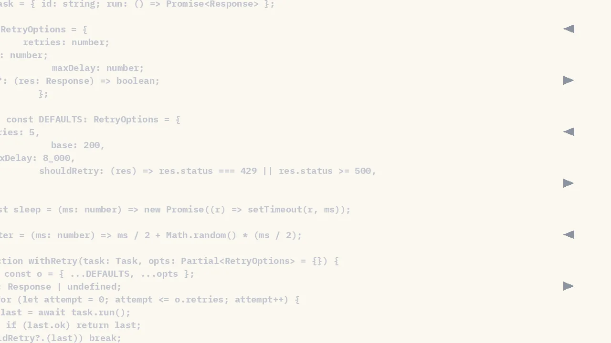

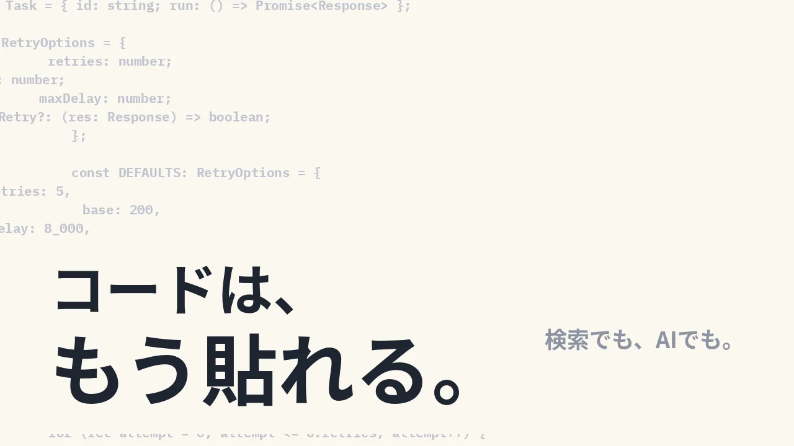
コードは、
もう貼れる。
検索でも、AIでも。
検索して貼ることも、AIに出させることも、いまならその場でできる。
声 33字 ／ 画面 21字
はじめ：文字は全面の小さな等幅（読ませない・量で見せる）。おわり：和文の太ゴシックが下半分を占め、重心が左下に落ちる。2 行目を 1 行目の約 1.4 倍にして「貼れる」を主役にする。
コードの壁は行ごとに逆向きへ流れ続ける（s22 の段ごとの逆向き。傾けない）。紙色の面が下から Crane up のように押し上がり、語は行マスクで下から入る。最後の 1 秒で壁全体へ Dolly in が始まり、濃い 1 行に向かって加速したまま 02 へ渡す。
- 現行案：流れる壁＋下からの面。
- 差し替え：壁を上から下へ Tilt down でなめ、最後に 1 行で止める（流れを使わない）。
この一行、なぜ？
0:08–0:18 / 約10秒 ・ 問い（本番は貼ったあと）

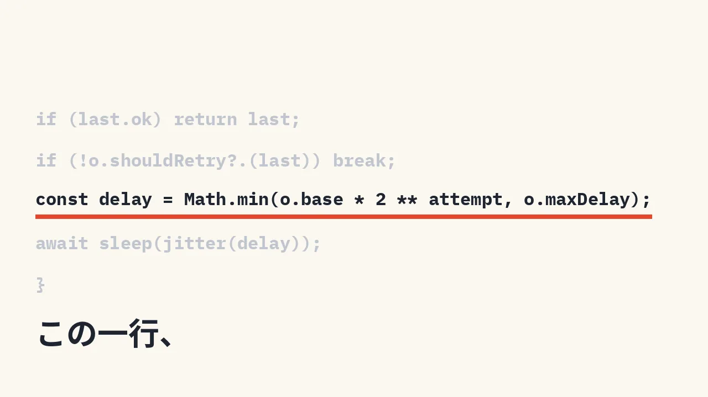

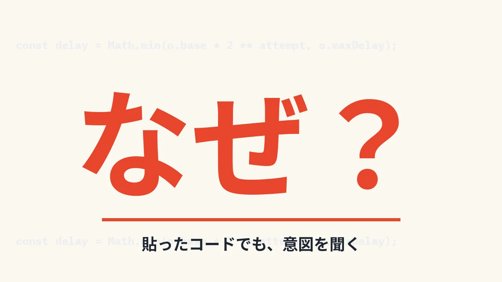
この一行、
なぜ？
貼ったコードでも、意図を聞く
実は、そこからが本番。貼ったコードでも、なぜそのロジックなのか、どんな意図なのかを聞く。
声 44字 ／ 画面 22字
はじめ：等幅 1 行が横一杯（横長の帯状の重心）。おわり：和文 3 字が中央に縦横とも大きく（点の重心）。字の大きさを約 9 倍にし、色を灰→朱へ。
01 からの寄りを止めずに放射状のぶれで 1 行へ飛び込む（g16。白い閃光は入れない）。下線が左から描かれ（s12）、行の字が左から順に記号へ崩れて「なぜ？」に組み変わる（s13 を作品中この 1 回だけ）。組み変わる間もカメラは寄り続け、決まった瞬間に半歩押し戻す。
- 現行案：1 行が崩れて「なぜ？」に組み変わる。
- 差し替え：1 行の上に朱の「なぜ？」が重なって降り、行は後ろへ Dolly out で沈む（崩さない案）。
見ているのは、コードではなく理由。
0:18–0:27 / 約9秒 ・ 主張（一文）

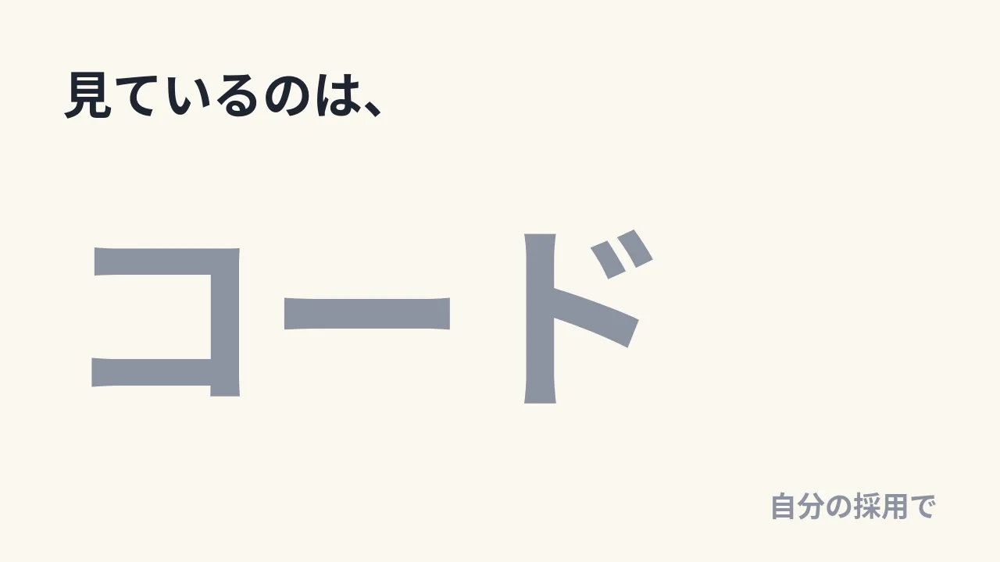

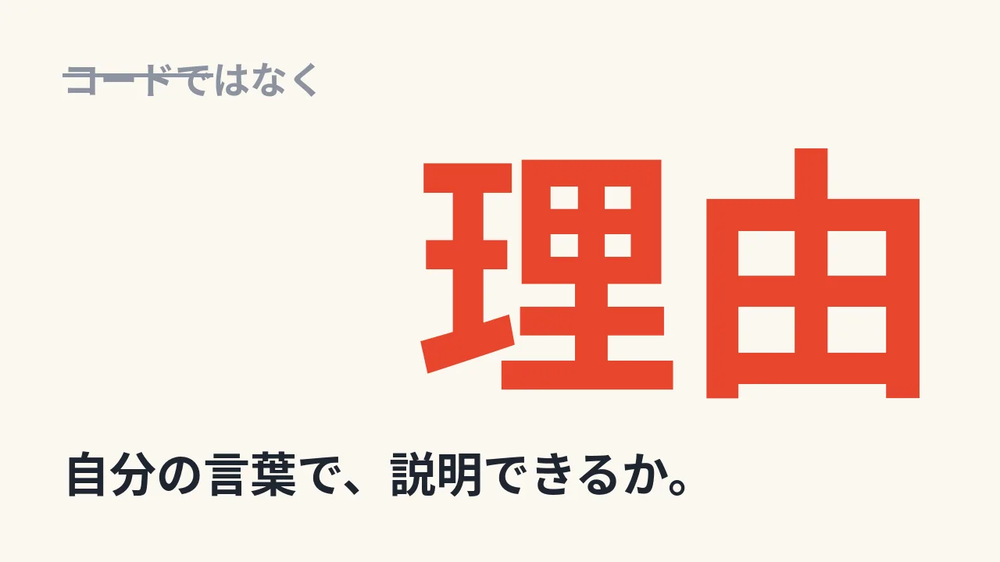
見ているのは、
コード
コードではなく
理由
自分の言葉で、説明できるか。
自分の採用で
自分の採用で見ているのは、コードではなく、理由を自分の言葉で説明できるかどうか。
声 40字 ／ 画面 39字
はじめ：重心は左（灰の 3 字）。おわり：重心が右（朱の 2 字）へ移り、左上と下に小さな語。左右の重心の入れ替えで「コード→理由」を見せる。
「コード」を左上へ押し出しながら縮め、取り消し線を左から引く（s12）。「理由」は右の画面外から Whip pan で入って止まる。止まった後も「理由」の層をゆっくり寄せ続け、下段の行は行マスクで入る。
- 現行案：左右の重心の入れ替え。
- 差し替え：上下の入れ替え（上の「コード」が下へ沈み、下から「理由」がせり上がる）。
借りた答えでは、考えていないのと同じ。
0:27–0:37 / 約10秒 ・ 主張の裏側（だめな答え）

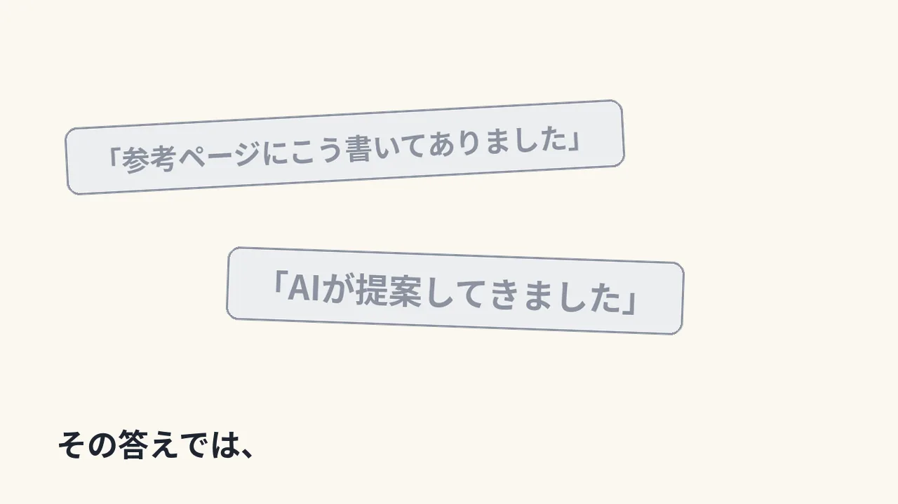

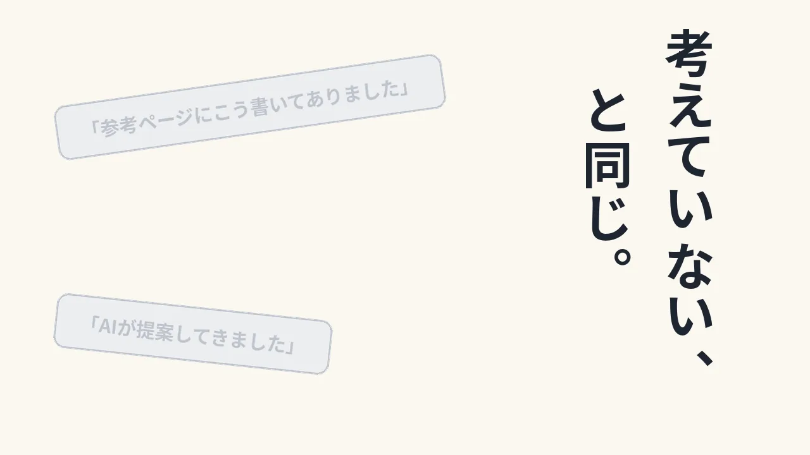
「参考ページにこう書いてありました」
「AIが提案してきました」
その答えでは、
考えていない、
と同じ。
「参考ページにこう書いてありました」「AIが提案してきました」。それは、考えていないと言っているのと変わらない。
声 56字 ／ 画面 49字
はじめ：横組みの札 2 枚が斜めに重なる（散った配置）。おわり：縦組み 2 行が右に立つ。作品中で唯一の縦組みにして、言い切りの重さを出す。
札は左右から斜めに滑り込み、ナレーションに合わせて 1 枚ずつ前へ出る。「その答えでは、」で画面全体が右へ Pan し、札は左へ置き去りになって縮む。縦組みは上から行マスクで下りる。札は崩したり割ったりしない（否定を破壊で見せない）。
- 現行案：札を置き去りにして縦組み。
- 差し替え：札 2 枚が中央で重なって 1 枚にまとまり、上に横組みで「考えていない、と同じ。」。
貼ってもいい。全部じゃなくていい。
0:37–0:47 / 約10秒 ・ 留保（読める・聞ける形で残す）

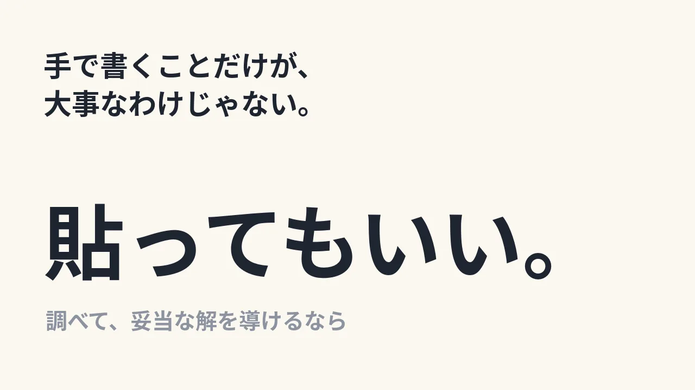

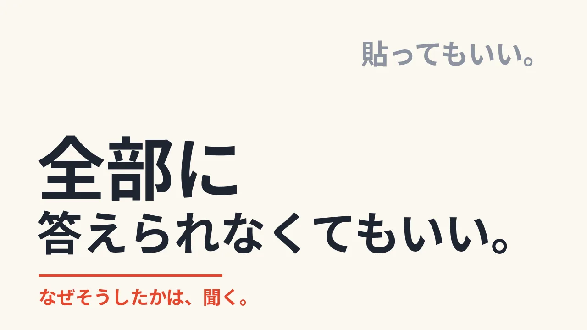
手で書くことだけが、
大事なわけじゃない。
貼ってもいい。
調べて、妥当な解を導けるなら
全部に
答えられなくてもいい。
なぜそうしたかは、聞く。
手で書くことだけが大事なわけじゃない。調べて妥当な解を導けるなら、貼ったコードでも構わない。全部に答えられなくてもいい。
声 60字 ／ 画面 67字
はじめ：小・大・小の 3 段、左揃え。おわり：大の語が 2 行に増え、前の主役は右上の小さな語に。余白を下に広く残し、朱の 1 行だけを置く。
「貼ってもいい。」を下から押し上げて右上へ退かせ、同時に「全部に」が左から Slide in。全体を少し斜めに Dolly in しながら、最後の朱の行で線を左から描く（s12）。留保の語は小さくしても、読める尺を残す。
- 現行案：主役の入れ替えで留保を 2 つ重ねる。
- 差し替え：「貼ってもいい。」「全部じゃなくていい。」を左右 2 列で並べ、真ん中に朱の「なぜ」を 1 字だけ置く。
書かないは判断。書けないは、手が止まる。
0:47–0:58 / 約11秒 ・ 根拠 1（書けない／書かない）

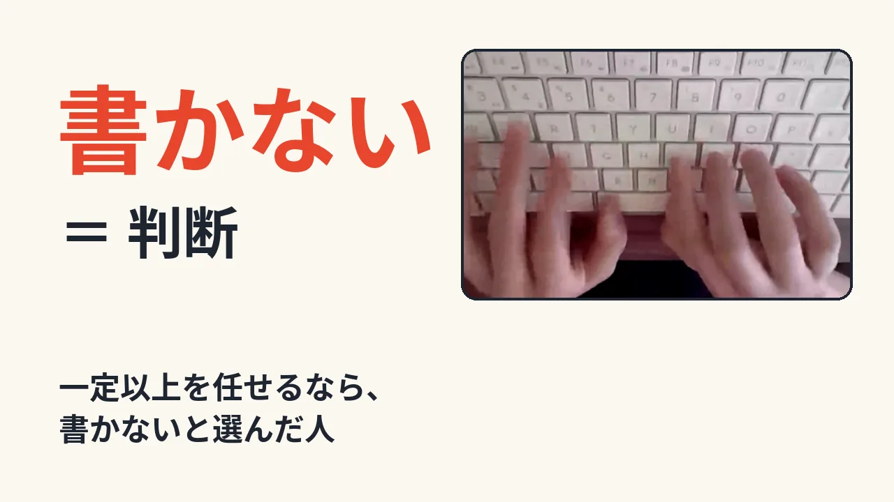

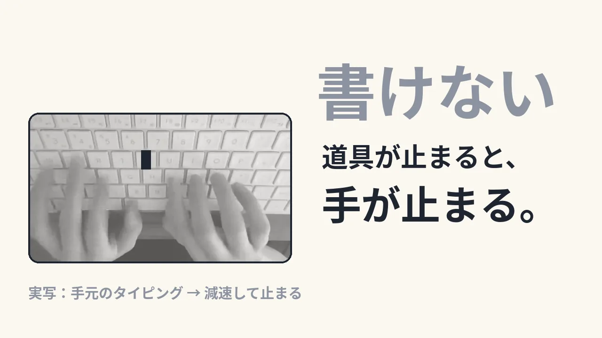
書かない
＝ 判断
一定以上を任せるなら、
書かないと選んだ人
書けない
道具が止まると、
手が止まる。
一定以上を任せるなら、書けない人ではなく、書かないと選んだ人。書かないは判断。書けないは、道具が止まった日に手が止まる。
声 60字 ／ 画面 45字
はじめ：文字が左・実写が右。おわり：実写が左・文字が右へ入れ替わる（左右反転）。朱の「書かない」と灰の「書けない」を同じ大きさで置き、色だけで対にする。
実写の窓は画面を横切って左下へ移る（Tracking）。窓の中の手元は速さを落として止まり（y36 の減速：速い→ゆっくり→停止）、止まった瞬間に彩度が抜ける。文字側は「書かない」が上へ抜け、「書けない」が下から入れ替わる。
- 現行案：実写の手元（CC0。下の素材表）。
- 差し替え：実写を使わず、02 のコードの行にカーソルが点滅したまま進まない図。※AI 生成の手元映像は 未承認（人の手の動きなので対象にはなり得るが、実写が確保済みのため提案しない）。
AI という下駄を外しても、高いまま。
0:58–1:09 / 約11秒 ・ 根拠 2（因果：下駄を外すと素の力が見える）

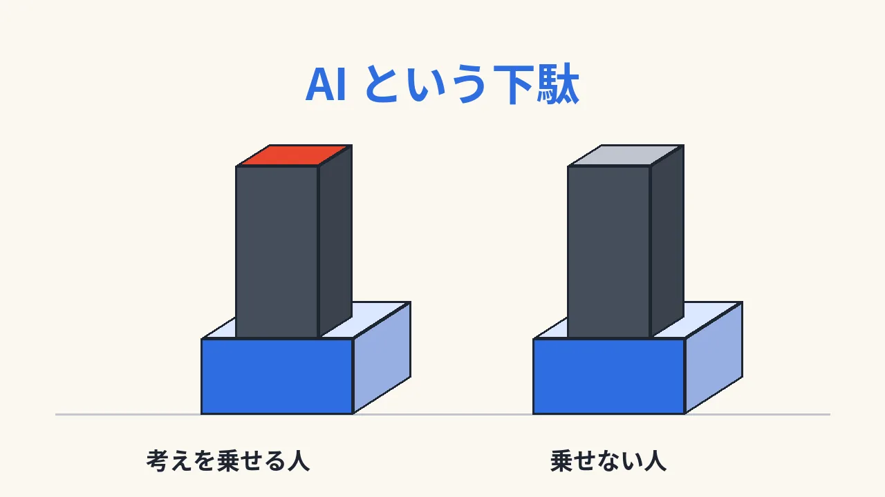

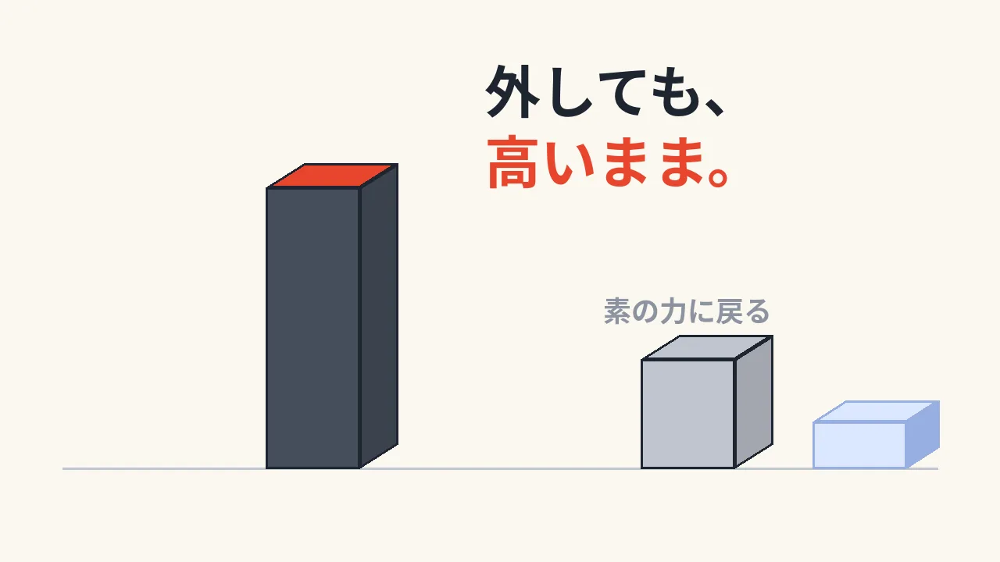
AI という下駄
考えを乗せる人
乗せない人
外しても、
高いまま。
素の力に戻る
自分の考えを乗せられない人は、AIがなくなった瞬間、素の能力に戻る。使いこなせる人は、下駄を外しても高いところにいる。
声 59字 ／ 画面 35字
はじめ：上中央に小見出し、下に同じ高さの 2 本（左右対称）。おわり：見出しは右上へ、柱の高低差で左右非対称に。文字は少なく、高さの差を主役にする。
作品中で唯一の 3D（比較と因果の場面）。カメラは斜め上から回り込み（Arc shot）、青い箱が横へ引き抜かれると右の柱だけが落ちる。落ちた瞬間に画面を一度沈め、左の柱を見上げる角度で止める。文字は 3D の上の層に置き、カメラの回転は掛けない。
- 現行案：3D の柱と箱（three.js）。
- 差し替え：3D を使わず、2D の棒 2 本と青い台で同じ因果を見せる。
なぜ、その設計？ 職種は説明できる範囲で決まる。
1:09–1:23 / 約14秒 ・ 根拠 3（筆者の経験）

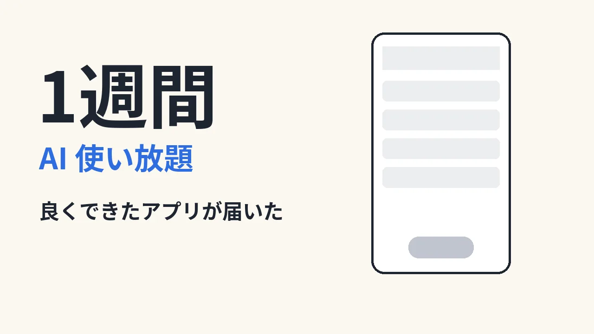

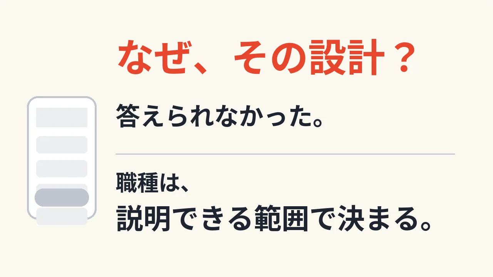
1週間
AI 使い放題
良くできたアプリが届いた
なぜ、その設計？
答えられなかった。
職種は、
説明できる範囲で決まる。
AI使い放題、1週間の課題で、良くできたアプリが届いたことがある。やり切った熱量は評価できる。でも、なぜその設計かを聞くと、答えられなかった。採用はした。ただ、エンジニアとしてではなかった。
声 95字 ／ 画面 54字
はじめ：左に文字・右に縦長の図（左右 2 分割）。おわり：図が小さくなり、文字が 3 段の縦の流れになる（上＝問い、中＝答え、下＝結論）。
アプリの図は右から Slide in し、画面を Push in で左下へ押しやる。「なぜ、その設計？」は 02 と同じ朱で上から叩き込み、02 の「なぜ？」と色で結ぶ。仕切り線が左から描かれ（s12）、結論の行は行マスクで入る。人物・本人の作品の画像は出さない。
- 現行案：アプリの図＋問いと結論。
- 差し替え：アプリの図を使わず、「1週間」から矢印で「なぜ、その設計？」へつなぐ流れ図。
次の仕事は、再出題じゃない。
1:23–1:32 / 約9秒 ・ 根拠 4（理由を見る理由）

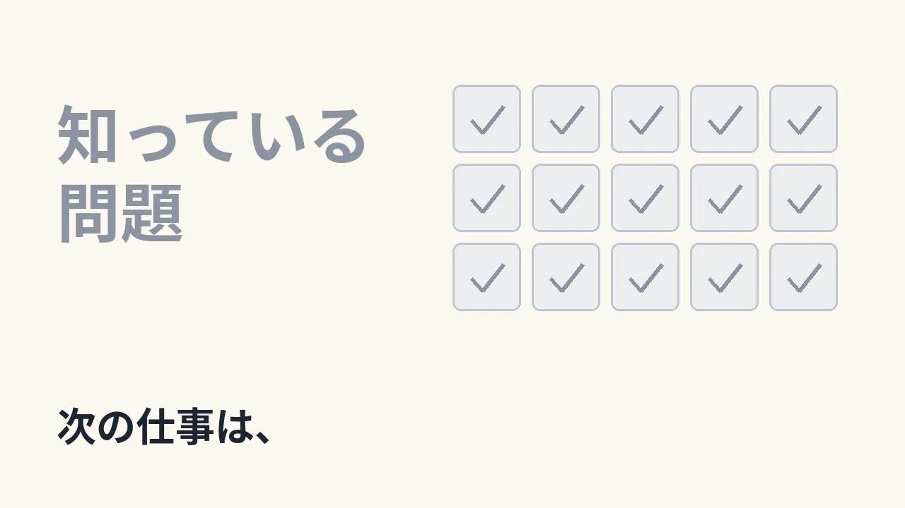

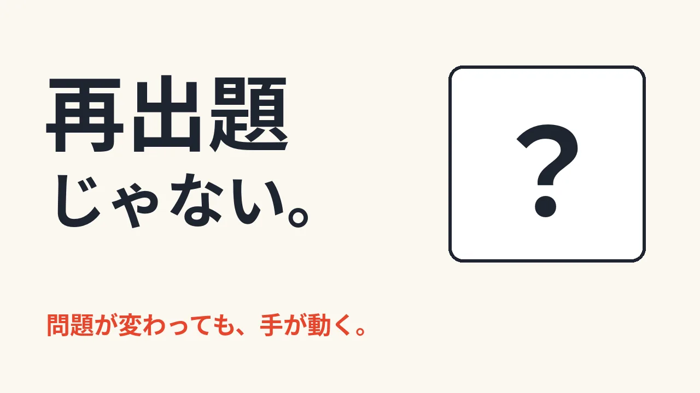
知っている
問題
次の仕事は、
再出題
じゃない。
？
問題が変わっても、手が動く。
次に来る仕事は、同じ問題の再出題じゃない。考えを説明できる人は、問題が変わっても手を動かせる。
声 47字 ／ 画面 36字
はじめ：右に小さな箱の格子（細かい密度）。おわり：1 つの大きな箱（粗い密度）。密度の切り替えで「知っている問題」から「未知の問題」へ。
格子の箱が中央へ吸い寄せられて 1 つにまとまり（Zoom out から Zoom in へ反転）、まとまった箱が少し回って「？」が出る。左の語は「知っている問題」が下へ流れ去り、「再出題じゃない。」が上から入る。
- 現行案：格子が 1 つの箱にまとまる。
- 差し替え：格子の 1 マスだけが「？」に変わり、カメラがそこへ寄る。
仲間として信頼できるのは、考えを説明できる人。
1:32–1:42 / 約10秒 ・ 結び（筆者の言い切り）

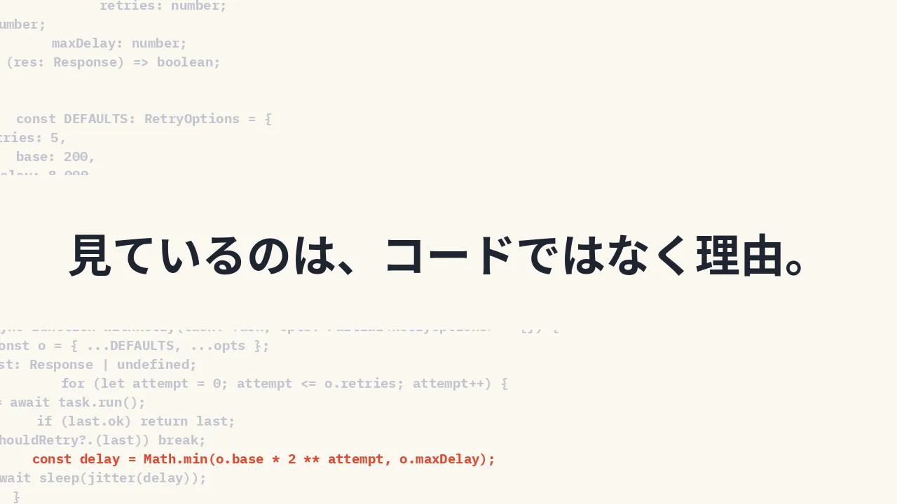

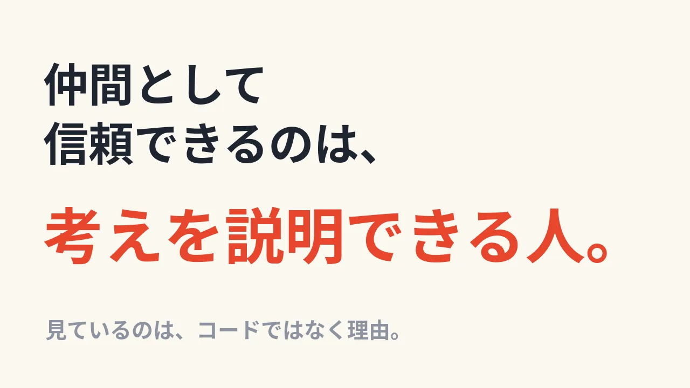
見ているのは、コードではなく理由。
仲間として
信頼できるのは、
考えを説明できる人。
見ているのは、コードではなく理由。仲間として信頼できるのは、考えを説明できる人だ。
声 41字 ／ 画面 40字
はじめ：全面の壁＋中央 1 行（01 と同じ素材で始まりと結ぶ）。おわり：左揃え 3 段、最後の行を最大に。重心が左下へ降りて終わる。
壁を Dolly out で引いて全体を見せ、朱の 1 行から壁が左右へ割れて消える。3 行は上から順に行マスクで入り、最後の行で画面を一度だけ押し込む。言い切りのあと、画面全体を右へ Whip pan してエンドロゴへ渡す。疑問形では終えない。
- 現行案：壁が割れて結びの 3 行。
- 差し替え：壁の全行が朱の 1 行に集まって消え、その位置から結びの 3 行が出る。
エンドロゴ
1:42–1:46 / 約4秒 ・ エンド

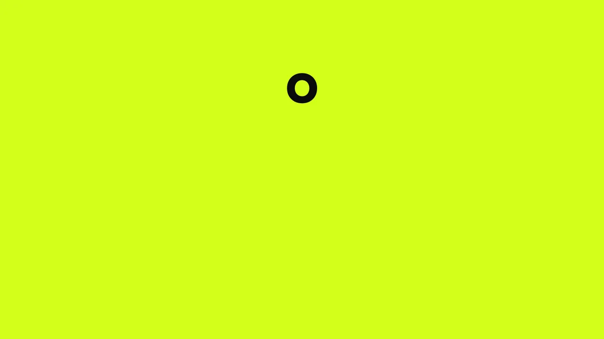

ロゴのみ
なし（ロゴのみ。音は「試聴待ち」）
声 0字 ／ 画面 0字
ロゴ SVG の標準アニメーション（0–2.6 秒 o が落ちてバウンド／2.6–3.2 秒 左へスライド／3.0–4.0 秒 .work が出る）。完了後に 1–1.5 秒 保持（尺 4 秒は目安。保持を含めて制作側で調整）。
10 の Whip pan の勢いのまま切り替える。ロゴは Pan も Zoom もしない。ロゴの形・色・比率は変えない。
- 仕様固定：差し替えなし（背景 #d2ff1a、ロゴのみ。出典クレジットは置かない）。
記号・色の一覧（1 記号 = 1 意味）
| 記号・色 | 意味（これ以外に使わない） | 使うカット |
|---|---|---|
| 朱（#e8452c） | 理由・問い（自分の言葉で説明すること）。「なぜ？」「理由」「書かない（＝判断）」「考えを乗せる人」の天面、結びの語。 | 02・03・05・06・07・08・09・10 |
| 灰（#8c93a0 ほか淡い灰） | 借りたもの・中身のないもの：貼ったコード、だめな答えの札、「書けない」、素の力に戻った柱、知っている問題。 | 01–09 |
| 青（#2f6fe4） | AI という道具（下駄）。「AI 使い放題」。 | 07・08 |
| インク（#1e2430） | 主文。意味は持たせない。 | 全カット |
| 紙色（#fbf8f1） | 背景。意味は持たせない（全カット明るい背景）。 | 01–10 |
| コードの壁（等幅の灰色の行） | その場で貼れるコードの量。読ませない。 | 01・02・10 |
| 朱の下線 | 「ここを問う」（理由を聞く場所）。 | 02・05 |
| 灰の取り消し線 | 見ていないもの（コード）。 | 03 |
| 角丸の札（灰） | 借りた答え（参考ページ／AI の提案）。 | 04 |
| 止まったカーソル（黒い四角） | 手が止まった状態（06 のみ）。 | 06 |
| 柱（立体） | その人の力の高さ。青い箱＝下駄（AI）。 | 07 |
| 白い角丸の画面の図 | 出来上がったアプリ（中身は描かない）。 | 08 |
| 済みの印の付いた小箱／大きな「？」の箱 | 知っている問題／次に来る未知の問題。 | 09 |
| ライム #d2ff1a | エンドのロゴ背景のみ。 | 11 |
チェック済み：朱は「理由・問い」以外（警告・強調一般）に使っていない／灰は「借りたもの・中身のないもの」に限る／青は AI だけ。画面に数字を出すのは「1週間」（課題の期間）だけで、何かの測定値ではありません。
根拠との対応
主張・根拠・留保・画面の文言の対応表は references.md にあります。要点：
- 根拠は筆者の原稿（採用に関わってきた経験にもとづく見方）だけです。調査データの数値は使いません。
- 「貼ったコードでも構わない」「全部に答えられなくてもいい」「自分の採用で」の留保を残しています。
- 08 の経験は人物を特定できる情報を出さず、原稿が書いた範囲（課題・質問・採用した職種）にとどめます。
- 原稿が引く他社の面接方針（NTTドコモ、Canva、Amazon、Anthropic）と漫画の引用は、この動画の主張の外なので使いません。
- 効果の検討（NANKA DEKIRU）は
effects-direction.mdに記録しています。
未確定事項とユーザーに判断してほしい点
- 判断尺：この企画は約1:46（原稿の量と主張から）。動画案の起点の 2:15 にするか。2:15 にする場合は論点を足すことになる（上の「尺の根拠」）。
- 判断ナレーションを使うか。使う場合、音声の生成を依頼するか（明示の依頼があるまで生成しません）。
- 未確定06 の実写（CC0・第三者が撮った手元）の受け渡し方法。リポジトリには入れられないため、企画側の手元のファイルをどう制作側へ渡すか。または、手元をご自身で撮影した映像に差し替えるか。
- 判断08 の経験談（課題を出した若い人の話）を映像に入れてよいか。人物は特定できない形にしていますが、本人に関わる話です。外す場合は 08 を削って約 1:32 になります。
- 判断結びを「仲間として信頼できるのは、考えを説明できる人。」で言い切ってよいか（原稿の「仲間として信頼できるのは、後者です」から）。
- 判断BGM／SFX：試聴待ち（初稿では設計しない。流れが決まってから決める）。
- 未確定3D（three.js）は 07 の比較・因果の場面だけ。ほかは DOM/CSS・SVG・GSAP 相当（制作側の裁量）。
確認状態
| 項目 | 状態 |
|---|---|
| 絵コンテ 22 コマの見た目（コンタクトシートで目視） | 確認済み：読めること、明るい背景、文字が安全余白（1280×720 で左右 56px・上下 36px）内に収まること（描画時の外接矩形で 61 個すべて範囲内）。 |
| 等速での再生・動きの確認 | 未確認（企画のため映像は作っていない。実際の速さで見ていない）。 |
| NANKA DEKIRU の効果の検討 | 実施済み。effects-direction.md に記録。デモは静止画の撮影まで。連続再生での動きは未確認。 |
| 文字のはみ出し・重なりの機械的チェック（映像） | 制作側で実施（上の担当範囲）。 |
| 06 の実写 | 取得・回転・区間の切り出しと静止画の確認まで。映像への組み込みは未確認。 |
| ナレーションの音声・BGM | 作っていない（BGM は試聴待ち）。 |
| 最終判断 | ユーザーが実際の速さで見て決める。 |